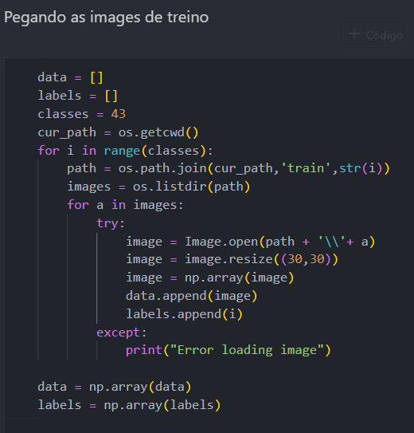
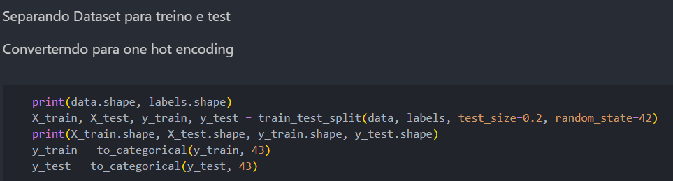
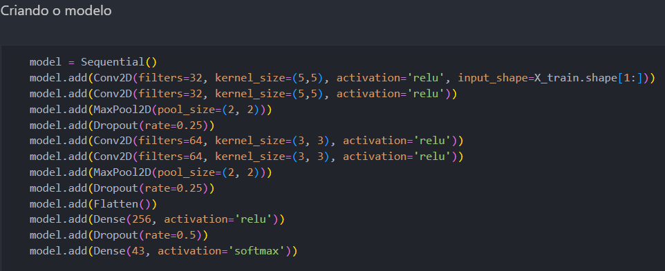
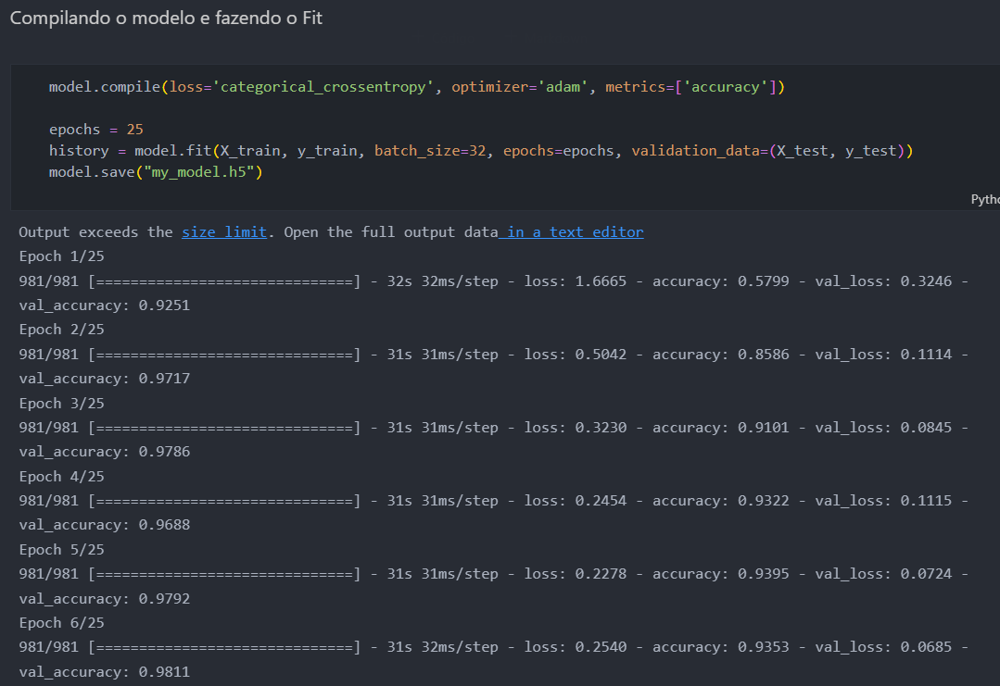
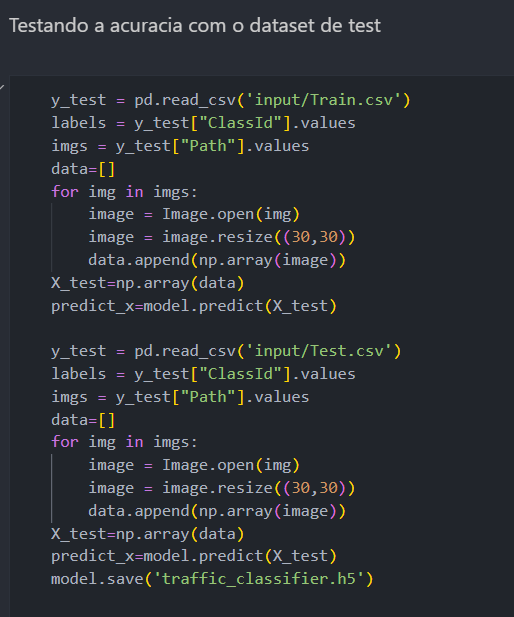
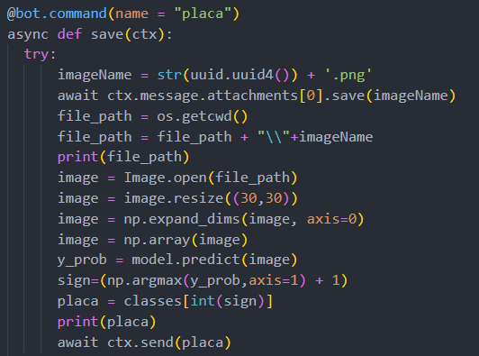

Integrantes do grupo:
Neste PI, foi implementado uma IA reconhecedora de placas de trânsito Alemãs, baseados nos conceitos de deep learning, com a criação de uma rede convolucional(CNN), Sendo usado um dataset retirado o Kaggle:
Traffic Signs DatasetPara iniciarmos a IA, pegamos as imagens de placas de trânsito dadas pelo dataset, fazendo processamento destas e transformando-as em um tipo de data aceita pelo keras ( biblioteca usada para deep learning )
Após tratadas, para podermos fazer melhores predições, fazemos um processo chamado "One Hot encoding", que categoriza estas variaváveis em um tipo de formulario para facilitar o algoritmo.
 Criamos o modelo do tipo "Sequencial", para podermos inserir camadas da rede neural em série, utilizando as funções de ativação relu e softmax. Por fim, aplicado o fit e testado a acurácia de nosso modelo, variando entre 15 a 50 épocas.
 Ao final do fit, salvamos o modelo e testamo-os com os dados dos CSVs de train e Test, e criamos um novo modelo testado.
Foi criado um bot para o discord, onde nele teremos a interação com o usuário, onde ele enviará uma imagem e o BOT irá retornar o nome da placa.
Para isto, criamos um evento de listening do canal usado a partir do envio de uma imagem em formato .png. Esse evento é escutado pelo bot, no qual recebemos a imagem e ela já é tratada nos padrões que precisamos.
